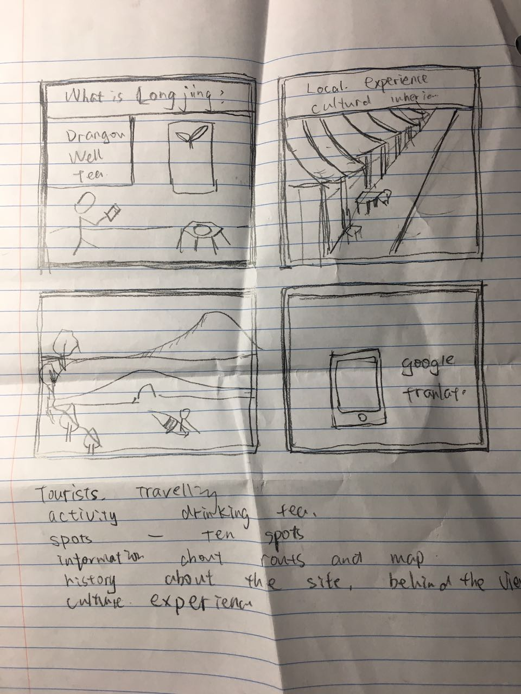
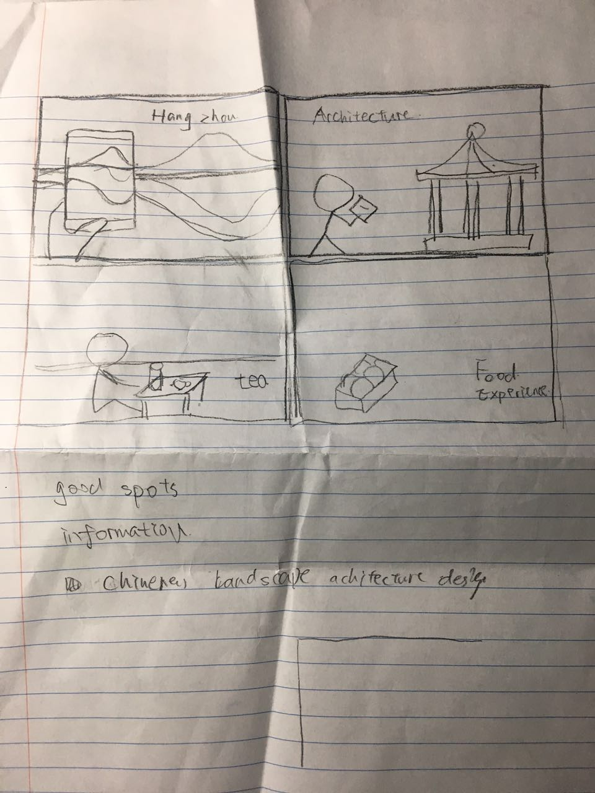

storyboard
  settingNon- Chinese speaker want to know Chinese culture.
sequence
what leads someone to use the app? If they want to know this world heritage
what steps are involved? Three steps, introduction. Mapping must go. Build trip
what task is being illustrated? Build your own trip to this world heritage
satisfaction
what motivates people to use this project? interest in Chinese lagacy perservation
what does it enable people to accomplish? Build up their trip and know this city broardly.
what need does it fill? More deep interaction